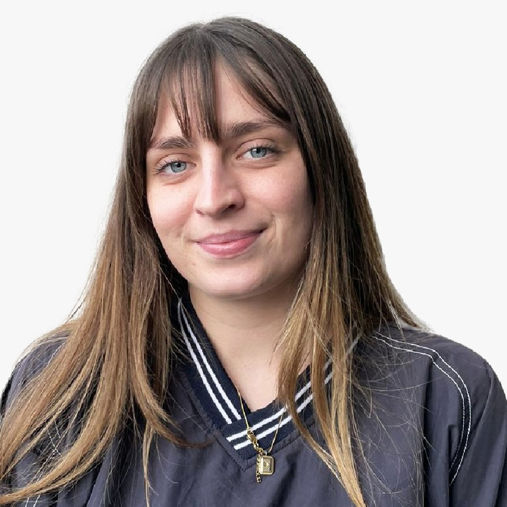

Wir sind die Aaregurus

Nora Lee Rüttimann
Nora ist die Architektin unserer Website. Mit ihrer Expertise bringt sie Struktur in jeden Code und sorgt dafür, dass unsere Projekte nicht nur funktionieren, sondern auch fantastisch aussehen.

Sara Davaz
Sara ist das organisatorische Rückgrat unseres Teams. Als Expertin für Partnerschaften und Administratorin hält sie unsere Projekte auf Kurs und unsere Repository-Dokumentation auf dem neuesten Stand.
Josué Kehl
Josué ist unser Experte für alles, was mit der Aare zu tun hat. Er kennt nicht nur die aktuellen Wasserdaten, sondern auch die nötigen APIs, um diese Informationen zugänglich zu machen.